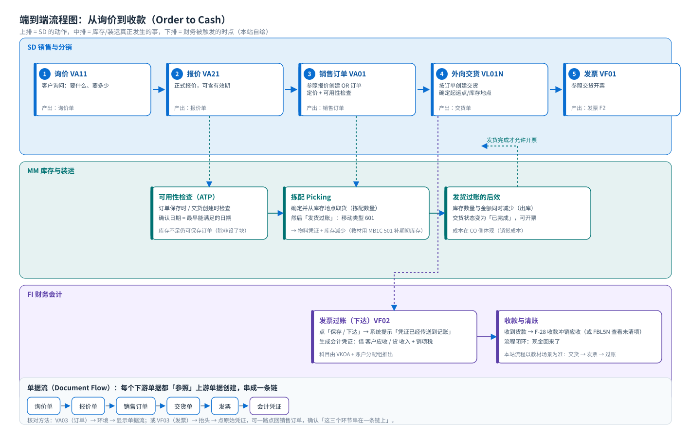

端到端流程：从询价到收款
Order to Cash · 流程图 · 单据流 · 集成点 · 状态
1. 全局流程图
{kind=link}

读图要点
- 横向是时间，箭头方向就是顺序：先有订单才有交货，先有交货才能开票。
- 纵向是责任：同一件事可能横跨三个模块（例如「发货」在 SD 是交货单、在 MM 是物料凭证、在 FI 有成本）。
- 虚线是「触发」而不是「同一张单据」：创建交货会触发装运准备，发货过账会触发库存变化。
2. 六个环节：谁做、输入什么、产出什么
| 环节 | 谁做 | 输入 / 前提 | 系统做什么 | 产出 | T-code |
|---|---|---|---|---|---|
| ① 询价 | 销售 | 客户 + 物料 + 数量 | 建一张不具约束力的询问单 | 询价单（IN） | VA11 |
| ② 报价 | 销售 | 参照询价或直接新建 | 给出价格与有效期 | 报价单（QT） | VA21 |
| ③ 销售订单 | 销售 / 客服 | 客户有销售视图、物料有销售视图、有条件记录、有库存或允许缺货 | 确定项目类别、定价、税、伙伴、可用性检查、交货日期 | 销售订单（OR） | VA01 |
| ④ 外向交货 | 发货 / 仓管 | 订单已存在、行项目允许交货 | 确定起运点、拣配库存地点、交货日期 | 交货单（LF） | VL01N |
| ⑤ 拣配 + 发货过账 | 仓管 | 交货单存在、库存足够 | 拣配确认数量；发货过账（移动类型 601）真正出库 | 物料凭证 + 交货状态「已完成」 | VL02N |
| ⑥ 发票 + 过账 | 开票 / 财务 | 交货完成、开票相关配置就绪 | 按交货开票、算税，过账生成会计凭证 | 发票（F2）+ 会计凭证 | VF01 / VF02 |
最常见的误解：以为「订单保存」就完事了订单只是一个承诺。真正把货发出去、把钱记上账，靠的是后面的交货与发票。所以业务问「这单什么时候到货」时，看的是交货日期与确认数量，不是订单上的「要求交货日期」。
3. 三个集成点（面试/考试常问）
| 集成点 | SD 里做了什么 | 邻居模块发生了什么 | 怎么验证 |
|---|---|---|---|
| 需求传递（SD → PP） | 订单保存，行项目带需求类型/需求类别 | MRP（MD04）里出现该物料的需求 | MD04 输入物料看「销售订单」行 |
| 可用性检查（SD ⇄ MM） | 订单保存/交货创建时检查库存 | 把库存、采购在途、生产在单一起考虑，给出确认日期 | 订单行 → 确认页签；MD04；CO09 可用性总览 |
| 发货过账与记账（SD → MM / FI） | VL02N 点发货过账 | MM 生成物料凭证、库存减少；FI/CO 出现出库成本 | MB51（物料凭证）、VL03N（交货状态）、MB52（库存） |
| 开票记账（SD → FI） | VF02 下达发票 | FI 生成会计凭证：借客户应收 / 贷收入 + 销项税 | VF03 → 环境 → 会计凭证；FB03；FBL5N |
4. 状态：怎么知道这单走到哪了
每张单据都有一组状态字段。看状态就能判断「为什么开不了票」。常用状态：
| 状态 | 在哪张单据 | 含义 | 影响 |
|---|---|---|---|
| 整体状态 Overall Status | 订单 / 交货 / 发票 | 整张单据的处理进度 | 判断单据是否完结 |
| 拒绝原因 Rejection Reason | 订单行 | 这行不做了 | 该行不会被交货/开票 |
| 交货状态 Delivery Status | 订单行 | 未交货 / 部分交货 / 完全交货 | 决定能不能开票、剩多少可交 |
| 发货状态 Goods Issue Status | 交货单 | 是否已完成发货过账（PGI） | 未发货不能开票 |
| 开票状态 Billing Status | 订单行 / 交货 | 未开票 / 部分开票 / 完全开票 | 决定后续还能开多少 |
| 拣配状态 Picking Status | 交货单 | 未拣 / 部分 / 完全 | 提示仓库的作业进度 |
5. 顺序不能乱：三个真实会遇到的错误
- 「系统显示无可用库存」（教材任务 41 的第 4 步画面）：订单里数量大于可用库存，系统提示但可以继续（除非配置成阻止）。教材给的解决路径是
MB1C移动类型 501 无订单收货录入期初库存，让后续交货能走通。 - 建不出交货：订单行不允许交货（项目类别没勾交货相关？行已拒绝？已完全交货？），或没有可用库存/没有装运点。用
VL01N的「不完整日志」看系统提示。 - 开不了票：交货没做发货过账，或开票相关配置缺失（发票类型、开票日期、账户确定）。
VF01会列出「可开票的交货」，如果列表为空，就是上游没做完。
6. 自检：能不能把这张流程图默画出来
课堂检验（不看上面表格，口头回答）
- 五个单据的顺序？各由哪个 T-code 创建？
- 哪一步才真正减少库存？移动类型是多少？
- 哪一步才产生会计凭证？借贷各是什么？
- 如果客户问「为什么我的发票还没开」，你会查哪三个状态？
- 订单保存时提示库存不足，业务还能继续吗？后续怎么解决？